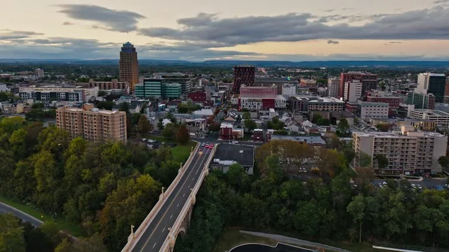
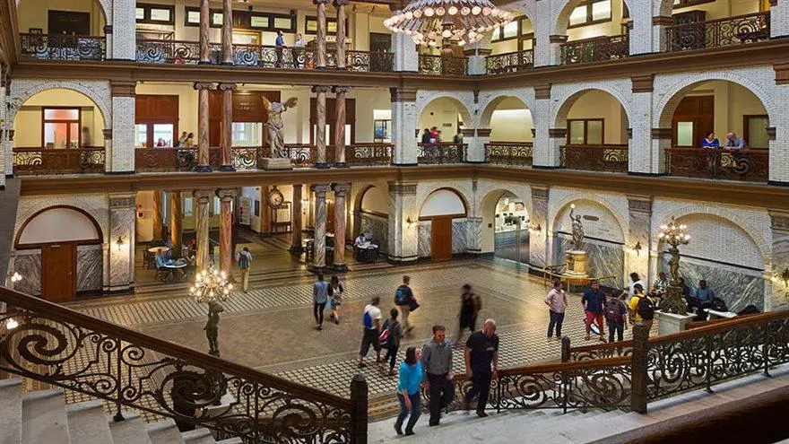

Biography
Background
I was born and raised in Allentown, PA. As a first-generation college student with an immigrant mother and a father who didn’t complete high school, I've always been determined to reach beyond the opportunities I was given and strive for more. My background has fueled my ambition to work hard, break barriers, and create a successful path for myself.
Present
I started at Drexel as a User Experience and Interaction Design (UXID) major. After spending the past summer working as an HR Recruiter, I discovered a passion for business operations and saw how important user-friendly software is in supporting business functions. This experience led me to shift my focus to Management Information Systems, where I’m now combining my interest in technology and business to create better solutions for organizations.
Future
In the next 10 years, I see myself working as a systems analyst in a corporate environment, making a positive impact at a company that values its employees and drives meaningful change. I want to contribute to a workplace that prioritizes innovation and growth while making a difference for both the organization and its people.